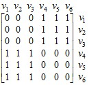
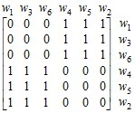

электронный
ресурс по учебной дисциплине
1-40 02 01 «Вычислительные машины, системы и сети»
|
||
| Оглавление | Программа | Теория | Практика | Контроль знаний | Об авторах | ||
Г л а в а 4
Изоморфизм графов
4.1. Отношение изоморфизма
Два графа G = (V, Е) и H = (W, F) изоморфны, если между их множествами вершин
имеется взаимно однозначное соответствие,
сохраняющее отношение смежности. Другими
словами, имеют место φ : V → W, ψ : E → F, и
если φ(vi) = wk и φ(vj) = wl, то ψ(vivj) = wkwl. Графы,
изображенные на рис. 4.1, являются
изоморфными, причем φ(v1) = w1, φ(v2) = w3, φ(v3) = w6, φ(v4) = w4, φ(v5) = w5, φ(v6) = w2. Соответствие ψ определяется однозначно по φ :
ψ(v1v4) = w1w4, ψ(v1v5) = w1w5, ψ(v1v6) = w1w2, ψ(v2v4) = w3w4, ψ(v2v5) = w3w5, ψ(v2v6) = w2w3, ψ(v3v4) = w4w6, ψ(v3v5) = w5w6, ψ(v3v6) = w2w6.
Рис. 4.1. Изоморфные
графы Задача установления
изоморфизма формулируется следующим
образом. Заданы два графа G = (V, Е) и H = (W, F). Требуется установить, изоморфны
они или нет, и если изоморфны, то определить
соответствие φ
между вершинами (как было указано выше,
соответствие ψ
определяется однозначно по φ). Данная задача может
иметь приложение при контроле больших
интегральных схем. Очевидно, необходимым
условием изоморфизма двух графов является
равенство чисел их вершин и равенство
чисел ребер, т. е. графы не могут быть
изоморфными, если хотя бы одно из этих
равенств не выполняется. Тривиальным
способом установления изоморфизма графов
является следующий. Пусть оба графа
представлены матрицами смежности – это означает, что
вершины графов пронумерованы в порядке
следования строк и столбцов матриц.
Изменение нумерации вершин графа
выражается в перестановке строк и столбцов
его матрицы смежности. Если зафиксировать
матрицу смежности одного графа, а в другой
последовательно менять порядок строк и,
соответственно, столбцов, то в случае
изоморфизма на каком-то шаге матрицы
совпадут. Например, нетрудно заметить, что
следующие матрицы смежности графов из
рис. 4.1, где вершины правого графа
упорядочены в порядке нумерации вершин
левого графа, совпадают: , . Если такого совпадения
не произойдет, то графы, вероятно,
неизоморфны, но чтобы убедиться в этом,
надо выполнить п! перестановок, где п – число вершин графа.
Ясно, что даже при сравнительно небольшом
п эта задача
окажется непосильной для современной
вычислительной техники. Рассмотрим некоторые
приемы сокращения перебора при выявлении
изоморфизма. 4.2. Инварианты перенумерации
вершин графа Пусть некоторая
величина а есть
функция, заданная на некотором множестве и
сохраняющая свое значение при некотором
преобразовании Т этого множества. Говорят, что
величина а
инвариантна
относительно преобразования Т, если она не меняет
свое значение при преобразовании Т. Величина а называется инвариантой
относительно Т. В нашем случае таким
преобразованием является перенумерация
вершин. В связи с установлением
изоморфизма рассматриваются инварианты
графа и инварианты вершин. Инвариантами
графа являются, например, число вершин,
число ребер, число компонент связности и
т. п. Инвариантами вершины являются
степень, полустепени, число вершин,
отстоящих от данной вершины на
определенном расстоянии. Совокупность инвариант
вершин служит инвариантой графа. В этом
случае величиной а является множество, которое должно
быть упорядоченным. Канонизация графа заключается в упорядочении его
вершин по значениям инвариант. Пусть для
вершин графа имеется система инвариант
α1, α2, … , αр.
Считаем, что задано отношение частичного
порядка Полная канонизация
графа достигается, когда
порядок Рассмотрим один из
способов канонизации графа. Разобьем
множество V
вершин графа G
на подмножества S1, S2, … , Sm, число т которых равно числу
различных степеней вершин и в каждом из
которых присутствуют вершины с одинаковой
степенью. Для каждой вершины vi ∈ V
образуем вектор размерности т, компоненты которого
соответствуют множествам S1, S2, … , Sm и
значением j-й
компоненты является число вершин из
множества Sj, смежных с vi.
Очевидно, данный вектор является
инвариантой вершины. Если в одном и том же
Sk
(k = 1, 2, … , m) оказались вершины с различными
векторами, то разобьем это Sk так,
чтобы в каждом из получившихся множеств
оставались вершины с одинаковыми
векторами, соответственно увеличив
размерность векторов и придав их
компонентам новые значения. При этом
поддерживаем порядок вершин,
соответствующий лексикографическому
порядку их векторов. Данное преобразование
повторяем до тех пор, пока в любом из
S1, S2, … , Sm не
останутся только вершины с одинаковыми
векторами. Проиллюстрируем
описанный процесс канонизации на примере
графа, изображенного на рис. 4.2. В качестве
начальной инварианты вершины возьмем ее
степень, т. е. α(v) = d(v).
Результаты выполнения данного процесса по
шагам выглядят следующим образом: α α1 α2 α1 α2 α3 α4 S1 v2 2 S1 v2 0 2 S1 v2 0 0 1 1 v6 2 v6 0 2 v6 0 0 1 1 v1 3 v1 1 2 S2 v4 0 0 2 1 S2 v3 3 S2 v3 2 1 S3 v1 1 1 1 0 v4 3 v4 0 3 v5 1 1 1 0 v5 3 v5 1 2 S4 v3 2 1 0 0 Рис. 4.2. Канонизируемый
граф При установлении
изоморфизма между двумя графами следует
параллельно канонизировать оба графа.
Тогда, если встретится какое-нибудь
несовпадение, надо прекращать процесс и
выносить решение об отсутствии
изоморфизма. на множестве вершин
графа V = {v1, v2, … , vn}, такое, что vi
на множестве вершин
графа V = {v1, v2, … , vn}, такое, что vi vj, если αk(vi) < αk(vj) для некоторого
k ∈ {1, 2, … , р) и αl(vi) = αl(vj) для всех l < k.
vj, если αk(vi) < αk(vj) для некоторого
k ∈ {1, 2, … , р) и αl(vi) = αl(vj) для всех l < k. оказывается полным и
строгим. Матрицы смежности полностью
канонизированных изоморфных графов должны
совпадать. Даже если невозможно полностью
канонизировать анализируемые на
изоморфизм графы, но удается разбить
множество вершин V канонизируемого графа на
подмножества S1, S2, … , Sm, характеризуемые
совпадением систем инвариант входящих в
них вершин, упомянутый выше перебор
значительно сокращается, так как его
следует вести только внутри данных
подмножеств. Действительно, если |V| = n и
|Si| = ni (i = 1, 2, … , m), то п1!п2! … пт! << п!.
оказывается полным и
строгим. Матрицы смежности полностью
канонизированных изоморфных графов должны
совпадать. Даже если невозможно полностью
канонизировать анализируемые на
изоморфизм графы, но удается разбить
множество вершин V канонизируемого графа на
подмножества S1, S2, … , Sm, характеризуемые
совпадением систем инвариант входящих в
них вершин, упомянутый выше перебор
значительно сокращается, так как его
следует вести только внутри данных
подмножеств. Действительно, если |V| = n и
|Si| = ni (i = 1, 2, … , m), то п1!п2! … пт! << п!.
(С) БГУИР